-3- Compute Probabilities given Bounds and Drift
Source:vignettes/task-3-compute-bounds-H1.Rmd
task-3-compute-bounds-H1.RmdThis vignette builds right on -2- Compute Drift given Power and Bounds so if you haven’t seen the vignette it is recommended to visit this one first.
Taking forward the example from the last vignette, we want three
stages of manual bounds and enter a drift of 3.3553.
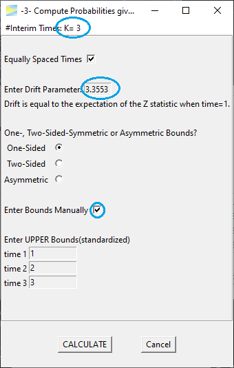
which CALCULATEs to
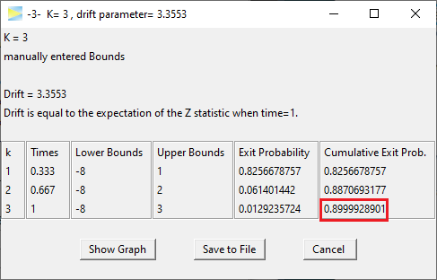
yielding about 90% of cumulative exit probability, which corresponds to the study power assuming a standardized effect size of 3.3553. To see the type I error of this design, that is, the probability under H0, we simply set the drift to zero.
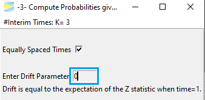
ReCALCULATE gives
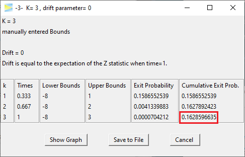
thereby resulting in a type I error of about 16.3%, which clearly exceeds the typically allowed level of 5%. As such the design is not valid.
To get closer to 5% we now could start adjusting the bounds bit by bit. For example, as the design already spends 15.8% of alpha at stage 1, lets increase the first stage bound to two.
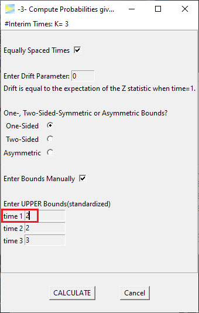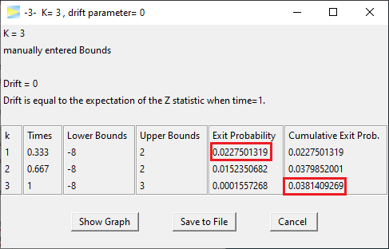
The type I error drops to about 3.8% so now we are a bit too conservative and could further adjust. If we set the last bound to 2 as well, we actually end up with a classic Pocock design.
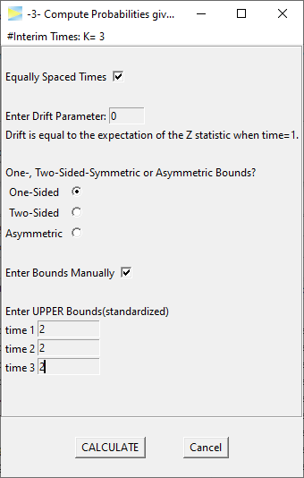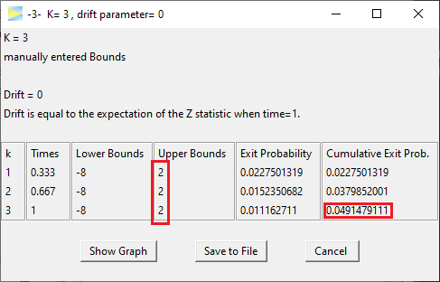
Very close already and of course the easiest way to get a Pocock design with exactly 5% alpha level is to abort manual bounds and revert back to using the corresponding function.
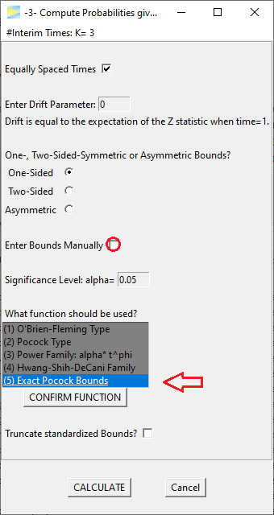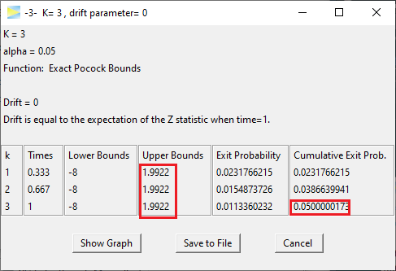
Last but not least lets calculate the power for this design, if the drift is 2,
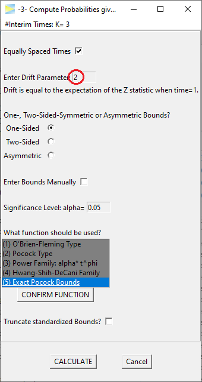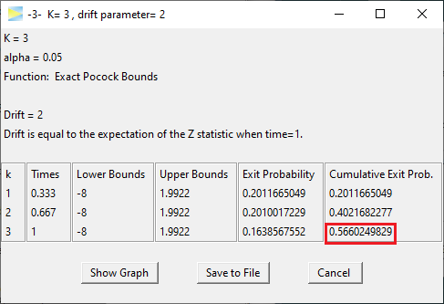
which apparently gives about 56.6%.
In the last vignette of this series we will see how to -4- Compute Confidence Intervals at the final stage of a group sequential study.